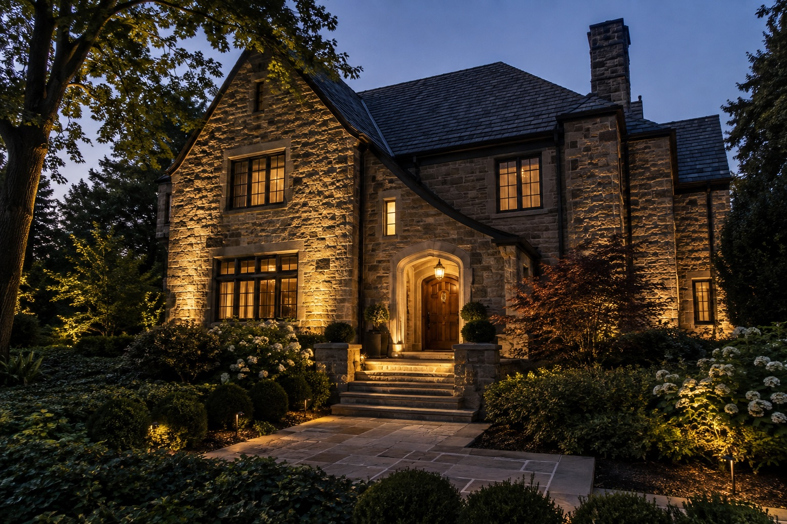
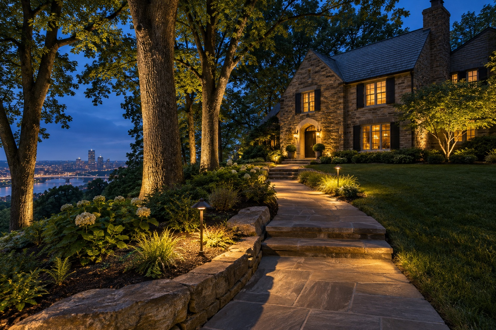
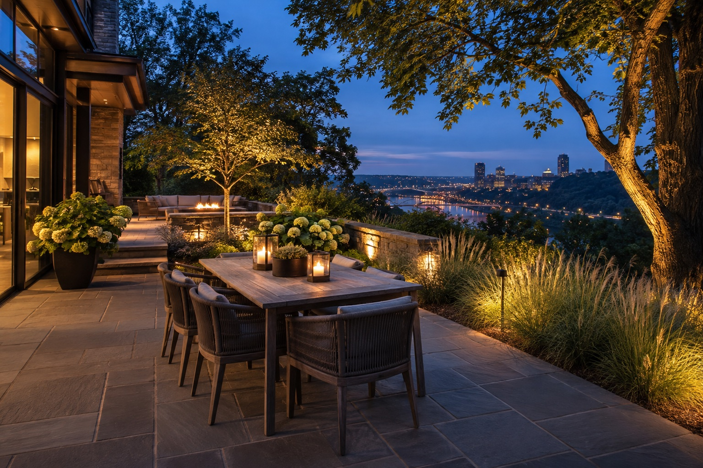

The art of lighting outdoors.
Low-voltage lighting design, installation, and service for Pittsburgh-area homes.
The best outdoor lighting feels like it belongs.
Good lighting does more than brighten a space. It reveals shape, creates depth, and makes the route from one place to another feel effortless. Lumascapes brings that thinking to the details of your home and landscape.

Let the details shine.
Thoughtful uplighting can reveal stone, brick, columns, and rooflines while preserving the atmosphere of the night.
- Home facade accents
- Entry and front elevation lighting
- Tree and landscape focal points

A warmer welcome home.
Well-placed light helps you and your guests move comfortably through walks, steps, and entries, without washing out the landscape.
- Pathway lighting
- Steps and transitions
- Driveway and entry accents

More life after sunset.
Layered light can bring comfort and atmosphere to patios, terraces, gardens, and the outdoor places where people gather.
- Patio and terrace lighting
- Garden and planting accents
- Outdoor room ambiance

Keep the glow going.
Outdoor spaces change. Lumascapes offers service for landscape lighting systems so the effect can continue to suit the property over time. Ask us about your existing system and what it needs.
- System assessment
- Adjustments and repairs
- Lighting refresh conversations
Questions before the lights go on?
What is low-voltage landscape lighting?
It is an outdoor lighting system that uses a transformer to supply lower-voltage power to fixtures placed around a property. The design and placement determine the final effect.
Can lighting be added to an existing landscape?
Often, yes. Tell us about the spaces you want to light, and we can discuss what is possible for your property.
Can you look at an existing lighting system?
Yes. Lumascapes lists service as part of its offering. Describe the system and the issue when you get in touch so we can discuss next steps.
What areas do you serve?
Lumascapes is based in the Pittsburgh area. Send your location with your inquiry and we can confirm whether your property is in range.
See your home in a whole new light.
Tell us what you have in mind. We would love to talk through the possibilities for your Pittsburgh-area property.
Start a conversation